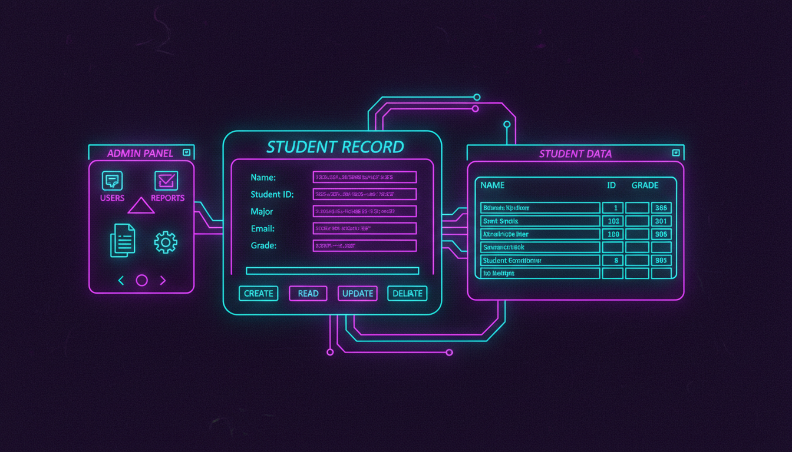

CRUD операції, пошук, фільтрація

public ref class StudentDBForm : public Form {
private:
DataGridView^ dgv;
TextBox^ txtName, ^txtAge, ^txtGroup, ^txtSearch;
Button^ btnAdd, ^btnEdit, ^btnDelete, ^btnSearch;
SqlConnection^ conn;
int selectedId = -1;
public:
StudentDBForm() {
this->Text = "База даних студентів";
this->Size = Size(900, 600);
// З'єднання
String^ connStr = "Server=(localdb)\MSSQLLocalDB;"
"Database=StudentDB;Integrated Security=true;";
conn = gcnew SqlConnection(connStr);
// Таблиця
dgv = gcnew DataGridView();
dgv->Location = Point(10, 10);
dgv->Size = Size(860, 300);
dgv->AutoSizeColumnsMode = DataGridViewAutoSizeColumnsMode::Fill;
dgv->SelectionMode = DataGridViewSelectionMode::FullRowSelect;
dgv->SelectionChanged += gcnew EventHandler(
this, &StudentDBForm::OnRowSelect);
this->Controls->Add(dgv);
// Поля вводу
Panel^ inputPanel = gcnew Panel();
inputPanel->Location = Point(10, 320);
inputPanel->Size = Size(500, 200);
AddLabel(inputPanel, "Ім'я:", 10, 10);
txtName = AddTextBox(inputPanel, 120, 10);
AddLabel(inputPanel, "Вік:", 10, 40);
txtAge = AddTextBox(inputPanel, 120, 40);
AddLabel(inputPanel, "Група:", 10, 70);
txtGroup = AddTextBox(inputPanel, 120, 70);
btnAdd = AddButton(inputPanel, "Додати", 10, 110,
gcnew EventHandler(this, &StudentDBForm::OnAdd));
btnEdit = AddButton(inputPanel, "Редагувати", 120, 110,
gcnew EventHandler(this, &StudentDBForm::OnEdit));
btnDelete = AddButton(inputPanel, "Видалити", 230, 110,
gcnew EventHandler(this, &StudentDBForm::OnDelete));
this->Controls->Add(inputPanel);
// Пошук
Panel^ searchPanel = gcnew Panel();
searchPanel->Location = Point(520, 320);
searchPanel->Size = Size(350, 100);
txtSearch = gcnew TextBox();
txtSearch->Location = Point(10, 10);
txtSearch->Size = Size(200, 25);
searchPanel->Controls->Add(txtSearch);
btnSearch = gcnew Button();
btnSearch->Text = "Пошук";
btnSearch->Location = Point(220, 10);
btnSearch->Click += gcnew EventHandler(
this, &StudentDBForm::OnSearch);
searchPanel->Controls->Add(btnSearch);
this->Controls->Add(searchPanel);
LoadData();
}
void LoadData() {
SqlDataAdapter^ adapter = gcnew SqlDataAdapter(
"SELECT * FROM Students", conn);
DataTable^ table = gcnew DataTable();
adapter->Fill(table);
dgv->DataSource = table;
}
void OnAdd(Object^ s, EventArgs^ e) {
SqlCommand^ cmd = gcnew SqlCommand(
"INSERT INTO Students (Name, Age, GroupName) VALUES (@name, @age, @group)",
conn);
cmd->Parameters->AddWithValue("@name", txtName->Text);
cmd->Parameters->AddWithValue("@age", Convert::ToInt32(txtAge->Text));
cmd->Parameters->AddWithValue("@group", txtGroup->Text);
conn->Open();
cmd->ExecuteNonQuery();
conn->Close();
LoadData();
ClearFields();
}
void OnEdit(Object^ s, EventArgs^ e) {
if (selectedId < 0) return;
SqlCommand^ cmd = gcnew SqlCommand(
"UPDATE Students SET Name=@name, Age=@age, GroupName=@group WHERE Id=@id",
conn);
cmd->Parameters->AddWithValue("@id", selectedId);
cmd->Parameters->AddWithValue("@name", txtName->Text);
cmd->Parameters->AddWithValue("@age", Convert::ToInt32(txtAge->Text));
cmd->Parameters->AddWithValue("@group", txtGroup->Text);
conn->Open();
cmd->ExecuteNonQuery();
conn->Close();
LoadData();
}
void OnDelete(Object^ s, EventArgs^ e) {
if (selectedId < 0) return;
if (MessageBox::Show("Видалити запис?", "Підтвердження",
MessageBoxButtons::YesNo) == DialogResult::Yes) {
SqlCommand^ cmd = gcnew SqlCommand(
"DELETE FROM Students WHERE Id=@id", conn);
cmd->Parameters->AddWithValue("@id", selectedId);
conn->Open();
cmd->ExecuteNonQuery();
conn->Close();
LoadData();
ClearFields();
}
}
void OnSearch(Object^ s, EventArgs^ e) {
SqlDataAdapter^ adapter = gcnew SqlDataAdapter(
"SELECT * FROM Students WHERE Name LIKE @search", conn);
adapter->SelectCommand->Parameters->AddWithValue(
"@search", "%" + txtSearch->Text + "%");
DataTable^ table = gcnew DataTable();
adapter->Fill(table);
dgv->DataSource = table;
}
void OnRowSelect(Object^ s, EventArgs^ e) {
if (dgv->SelectedRows->Count > 0) {
selectedId = Convert::ToInt32(dgv->SelectedRows[0]->Cells["Id"]->Value);
txtName->Text = dgv->SelectedRows[0]->Cells["Name"]->Value->ToString();
txtAge->Text = dgv->SelectedRows[0]->Cells["Age"]->Value->ToString();
txtGroup->Text = dgv->SelectedRows[0]->Cells["GroupName"]->Value->ToString();
}
}
void ClearFields() {
txtName->Clear();
txtAge->Clear();
txtGroup->Clear();
selectedId = -1;
}
Label^ AddLabel(Panel^ p, String^ text, int x, int y) {
Label^ lbl = gcnew Label();
lbl->Text = text;
lbl->Location = Point(x, y);
lbl->AutoSize = true;
p->Controls->Add(lbl);
return lbl;
}
TextBox^ AddTextBox(Panel^ p, int x, int y) {
TextBox^ txt = gcnew TextBox();
txt->Location = Point(x, y);
txt->Size = Size(200, 25);
p->Controls->Add(txt);
return txt;
}
Button^ AddButton(Panel^ p, String^ text, int x, int y, EventHandler^ handler) {
Button^ btn = gcnew Button();
btn->Text = text;
btn->Location = Point(x, y);
btn->Click += handler;
p->Controls->Add(btn);
return btn;
}
};-- SQL для створення таблиці
CREATE DATABASE StudentDB;
GO
USE StudentDB;
GO
CREATE TABLE Students (
Id INT PRIMARY KEY IDENTITY(1,1),
Name NVARCHAR(100) NOT NULL,
Age INT,
GroupName NVARCHAR(50),
Email NVARCHAR(100),
Phone NVARCHAR(20),
EnrollmentDate DATE DEFAULT GETDATE()
);